CURIOUS.
A bright editorial statement for culture programming.
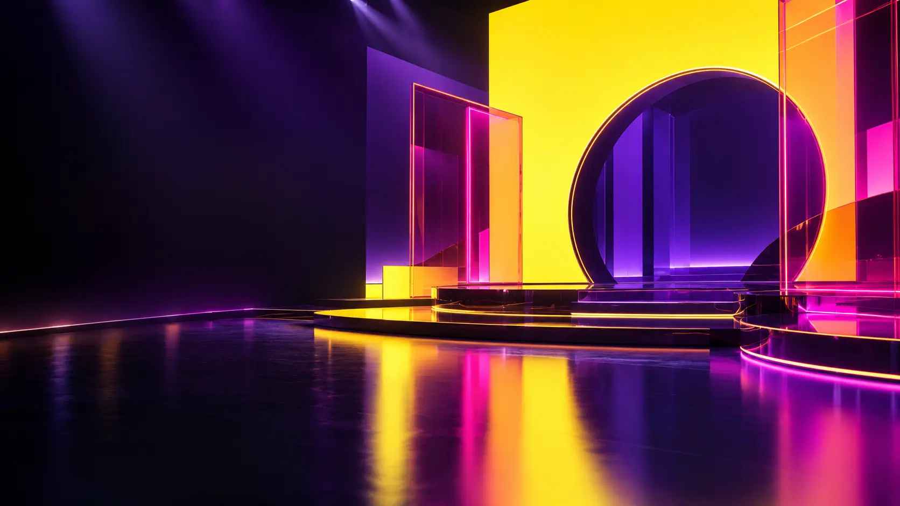
Something good is coming.
A fictional entertainment channel built for culture, conversation and discovery.
The identity gives every programme its own entrance while keeping one unmistakable broadcast voice.
Two stacked words become a compact on-screen beacon: immediate, legible and designed to animate.
Bold colour fields open, crop and reveal the schedule.
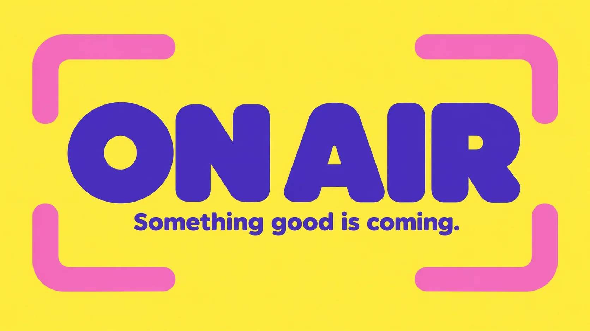
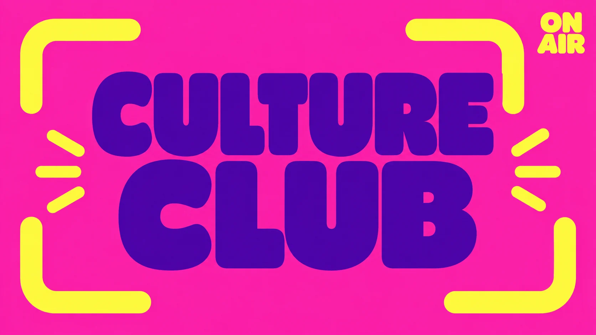
The frame system adapts to different content without flattening each show's character.
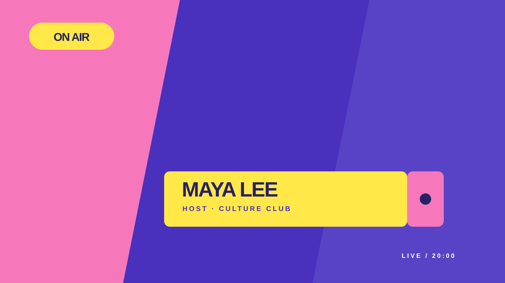
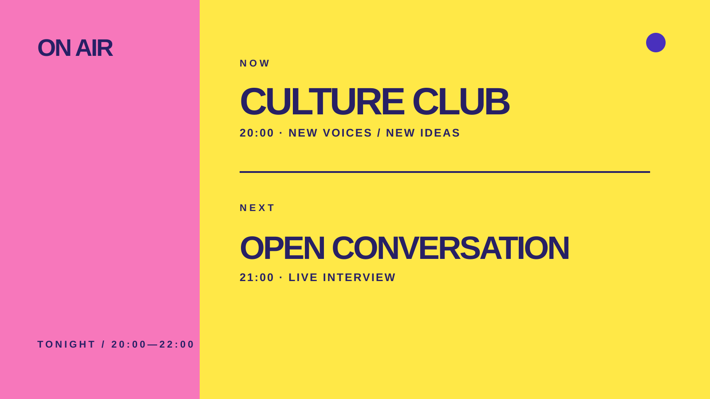
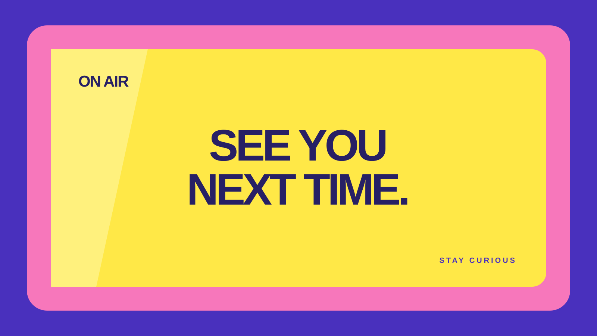
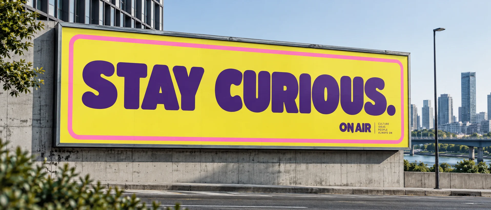
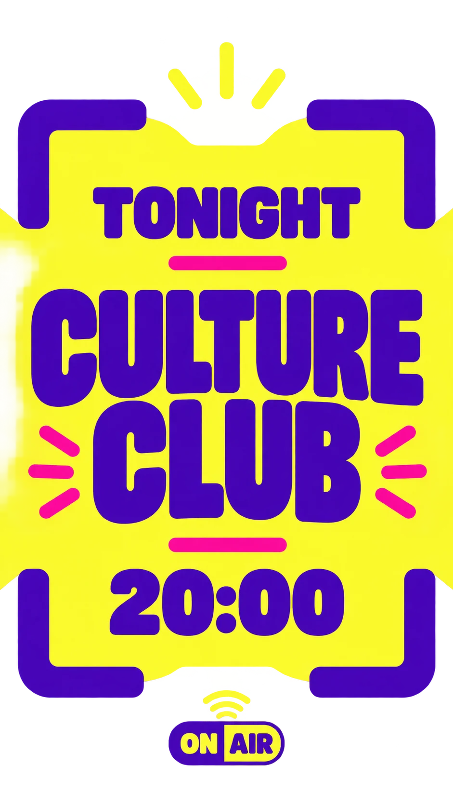
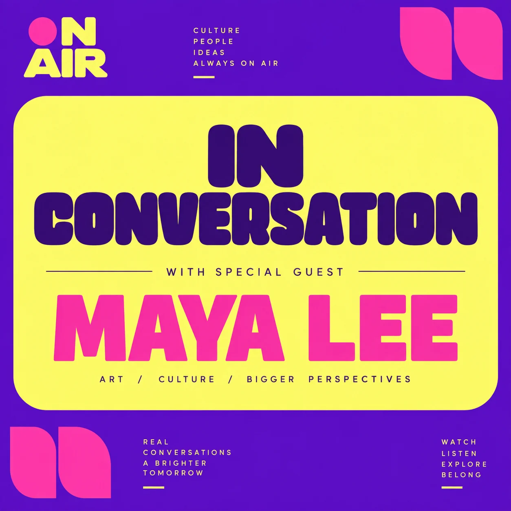
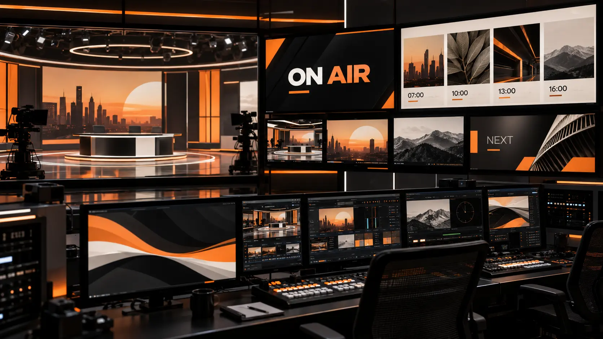
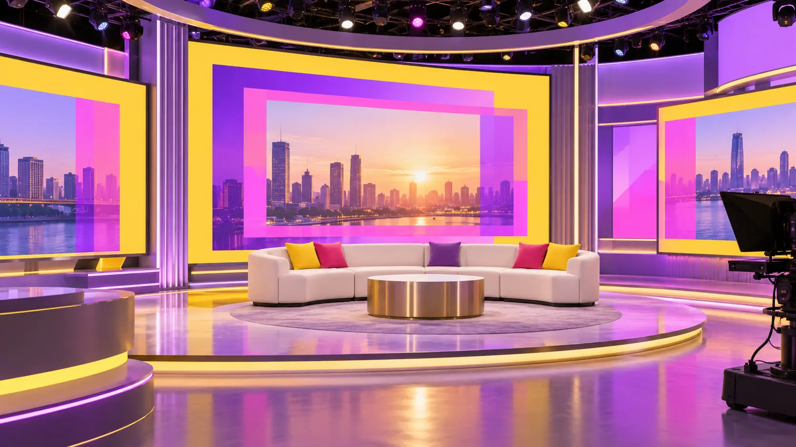
01 / OPEN
The frame creates the stage.
02 / ARRIVE
Type moves in one clear direction.
03 / HOLD
Information gets room to land.
Five flexible graphics expand the channel language across programme, social and studio environments.
A bright editorial statement for culture programming.
A live beacon that pulses without distraction.
Schedule information becomes part of the visual rhythm.
A modular portrait-free promotional format.
The frame system becomes a physical set element.